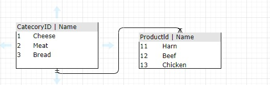

Alusta oma andmebaasirakenduste loomist Windows Formsiga kasutades Entity Framework Core'i.
Entity Framework Core on kaasaegne andmebaasi pääsukihi teek, mis võimaldab arendajatel töötada andmebaasidega objektorienteeritult. Koos Windows Formsiga saab luua kasutajasõbralikke ja graafiliselt intuitiivseid andmebaasirakendusi.
See juhend õpetab, kuidas seadistada ja kasutada Entity Framework Core'i Windows Forms projektis, pakkudes praktilisi näiteid ja juhiseid.
Lisainfot leiad Microsofti juhendist.
Siin on flowchart ERD Database lühike joonis loodud andmebaasi põhjal
